A man named William strode forth, Braving danger, darkness, and the unknown, Chasing legends whispered low, Of heroic feats untold and alone,
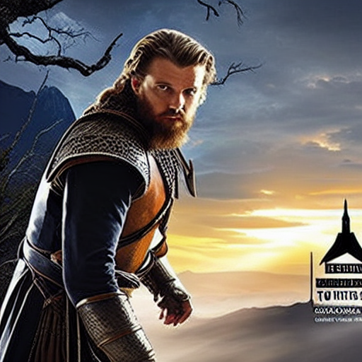Rocky cliffs, crashing waves, and thorny briers, Marked each step along his meandering way, Each tree, each stream, each gust of wind, Became companions on the trail ahead,
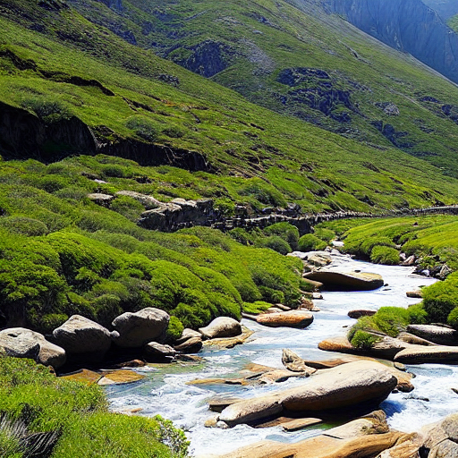Deep in valleys shadowed by hills, The scent of pine and damp earth filled his nose, The sky was painted with starry thrills, And silence whispered through the trees like frost,
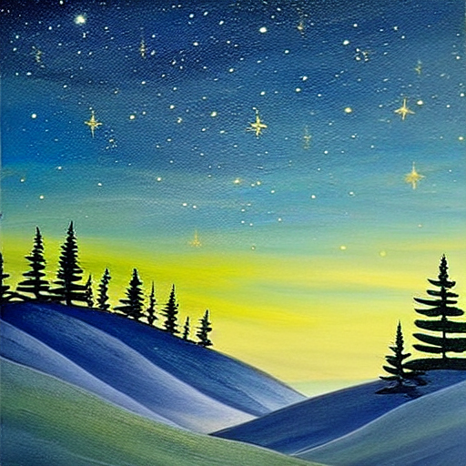Sunsets faded in hues of gold and red, Fireflies danced their aerial ballet, Glowing embers warmed a tender bed, Stars sparkled bright, illuminating the land,
Pungent tangs teased taste buds awake, Fresh berries sweet as nectar rare, Mushrooms bulbed beneath decaying stakes, From squirming worms to rustling hair,
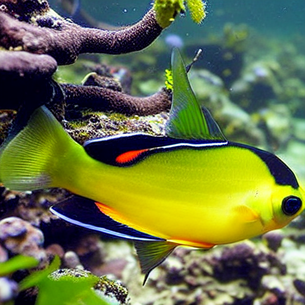Great libraries stored secrets grand, Their books old as oldest oaks or vines, Their scrolls unfurled like parchment lawns, Their words immortalized in golden lines,
Finally reaching cave-hidden keeps, William saw engraved stone beholds, Carvings told of bravest deeds and creeps, Unnatural powers entwined with folklore,
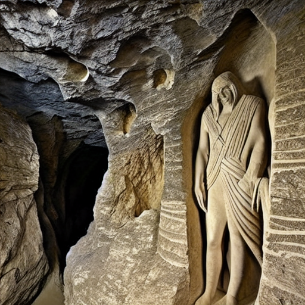Long did William peruse each tome, Reciting rituals and lores anew, Ancient scripts revealed mythological dome, Echoes of which whispered through time too,
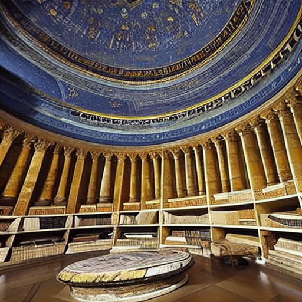One voice stood clear against the rest, Opal Windwhisper wise, regal, stern, Her cavern lair adorned with zenith's best, Silk sheets and velvet caressed her form,
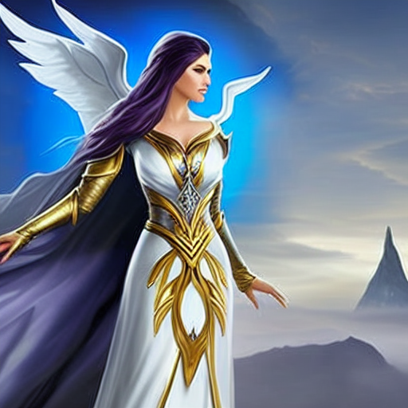She heard William's plea so earnest, Of dragon-haunted lands deserving aid, Together they communed with gestures, Opulence shared by candlelight arrayed,
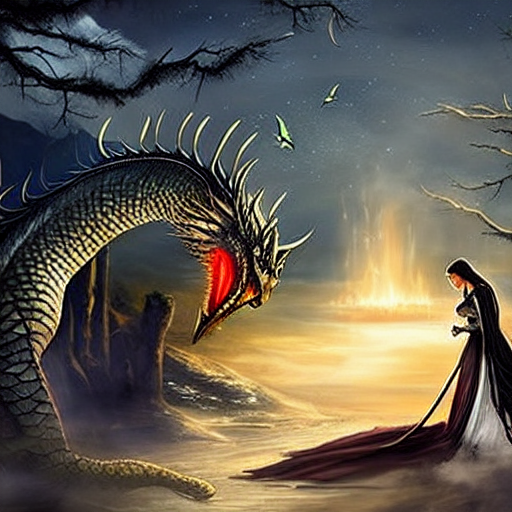Dragon scales glinted silver-grey, Sharp teeth snared prey beyond belief, Winged steeds, chimera, griffins gay, Illustrated histories conceived belief,
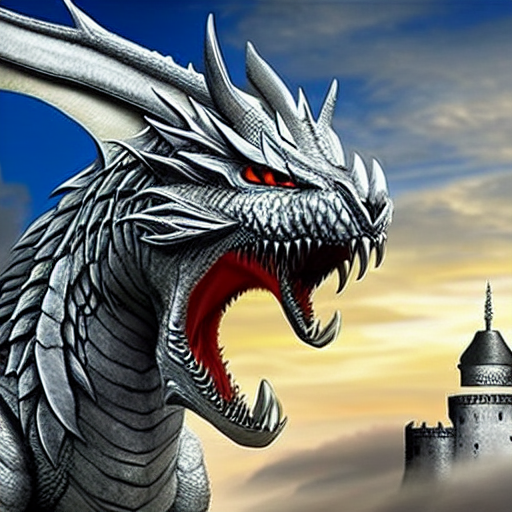Creatures fashioned pure from thought, Living nightmares brought to life in gloom, Powerful quests that made brave men bought, Victory achieved in final tomb,
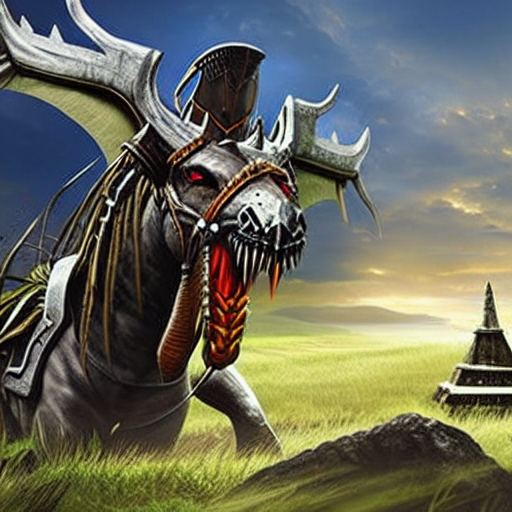Yet William's eyes held deeper fires, Embers blazed beyond imagined scope, She read his spirit unwritten tires, Confidence to challenge hope's fope,
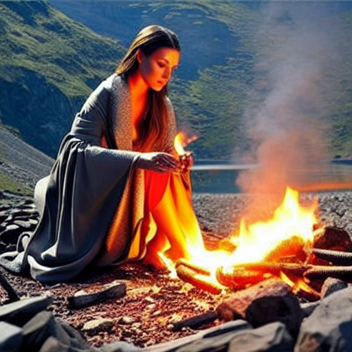Ages ago a quest began anew, Promising triumph over dread unknown, Where dragons rule despoticrew, Only sacrifice can set them wrong,
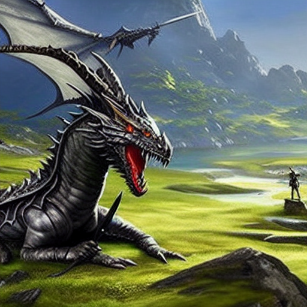Now William sets upon his way, Newfound purpose driving every act, Determination marks his say, Epic adventure shaping his fact,